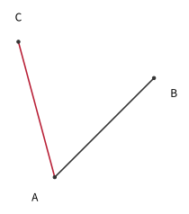
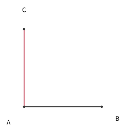
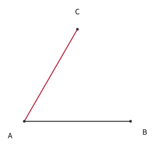

別冊練習問題 6 の解答 点を別の点のまわりに回転する
(1) 複素数平面上で、点 \(\beta=4 + 2 i\) を、点 \(\alpha=2\) を中心に \(60^\circ\) 回転した点 \(\gamma\) を求めよ。
αを原点に移す
\[\beta-\alpha=4 + 2 i-(2)=2 + 2 i\]
回転
\(60^\circ\) 回転は \(\cos60^\circ+i\sin60^\circ=\dfrac{1}{2} + \dfrac{\sqrt{3} i}{2}\) をかける。
\[\gamma-\alpha=\left(\dfrac{1}{2} + \dfrac{\sqrt{3} i}{2}\right)(2 + 2 i)\]もとに戻す
\[\gamma=\alpha+(\gamma-\alpha)=- \sqrt{3} + 3 + i \left(1 + \sqrt{3}\right)\]

【答案】
\[\gamma=- \sqrt{3} + 3 + i \left(1 + \sqrt{3}\right)\]答
(2) 複素数平面上で、点 \(\beta=1 + 2 i\) を、点 \(\alpha=-1 + 2 i\) を中心に \(90^\circ\) 回転した点 \(\gamma\) を求めよ。
αを原点に移す
\[\beta-\alpha=1 + 2 i-(-1 + 2 i)=2\]
回転
\(90^\circ\) 回転は \(\cos90^\circ+i\sin90^\circ=i\) をかける。
\[\gamma-\alpha=\left(i\right)(2)\]もとに戻す
\[\gamma=\alpha+(\gamma-\alpha)=-1 + 4 i\]

【答案】
\[\gamma=-1 + 4 i\]答
(3) 複素数平面上で、点 \(\beta=4 - i\) を、点 \(\alpha=1 - i\) を中心に \(60^\circ\) 回転した点 \(\gamma\) を求めよ。
αを原点に移す
\[\beta-\alpha=4 - i-(1 - i)=3\]
回転
\(60^\circ\) 回転は \(\cos60^\circ+i\sin60^\circ=\dfrac{1}{2} + \dfrac{\sqrt{3} i}{2}\) をかける。
\[\gamma-\alpha=\left(\dfrac{1}{2} + \dfrac{\sqrt{3} i}{2}\right)(3)\]もとに戻す
\[\gamma=\alpha+(\gamma-\alpha)=\dfrac{5}{2} + i \left(-1 + \dfrac{3 \sqrt{3}}{2}\right)\]

【答案】
\[\gamma=\dfrac{5}{2} + i \left(-1 + \dfrac{3 \sqrt{3}}{2}\right)\]答